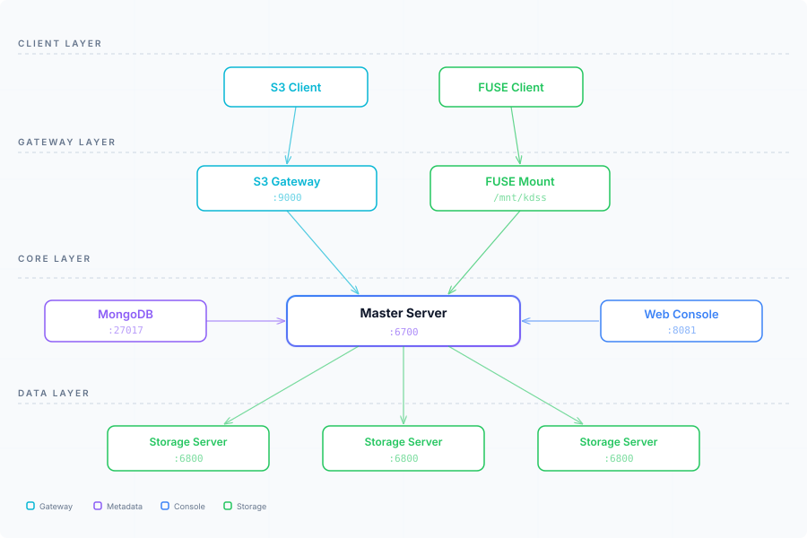
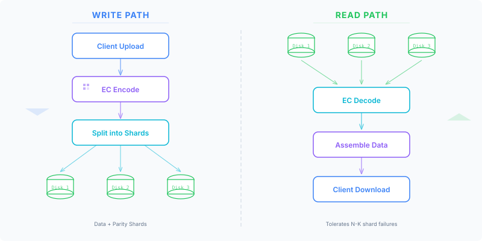

了解 KDSS 的分布式架构设计及组件协作方式。

中心协调节点，管理集群元数据、拓扑信息和条带分配。元数据存储在 MongoDB 中。
管理本地磁盘上的分片存储，CRC32 完整性校验，三层健康监控和后台压缩。
HTTP 网关，提供 S3 兼容 API。处理 EC 编解码并将数据路由到存储节点。
在写入时执行 EC 编码，在读取时执行 EC 解码，支持 LRU chunk 缓存和顺序预取。
基于浏览器的管理 UI，用于集群监控、配置和管理，内置 32 条告警规则。
元数据存储，保存集群拓扑、Bucket 信息、条带状态、用户账户和访问控制。

KDSS 绕过文件系统，直接写入裸盘。每块磁盘以双 SuperBlock 开头用于崩溃恢复，后接追加写的数据记录序列。
┌──────────────┬──────────────┬──────────────────────────┐
│ SuperBlock A │ SuperBlock B │ Data Records (append) │
│ (4KB) │ (4KB) │ Record = Header + Shard │
└──────────────┴──────────────┴──────────────────────────┘所有组件部署在同一组节点。适用于小型集群（3-5 节点）和测试环境。
┌─────────────────────────────────────┐
│ Node 1 (all-in-one) │
│ Master + Storage + S3 + Console │
└──────────────┬──────────────────────┘
│
┌──────────────┴──────────────────────┐
│ Node 2 (all-in-one) │
│ Master + Storage + S3 │
└──────────────┬──────────────────────┘
│
┌──────────────┴──────────────────────┐
│ Node 3 (all-in-one) │
│ Master + Storage + S3 │
└─────────────────────────────────────┘每个角色使用专用节点。适用于 6+ 节点的大规模集群。
┌──────────┐ ┌──────────┐ ┌──────────┐
│ Master 1 │ │ Master 2 │ │ Master 3 │
└────┬─────┘ └────┬─────┘ └────┬─────┘
│ │ │
─────┴─────────────┴─────────────┴─────
│ │ │
┌────┴─────┐ ┌────┴─────┐ ┌────┴─────┐
│Storage 1 │ │Storage 2 │ │Storage 3 │
│ + S3 GW │ │ + S3 GW │ │ + S3 GW │
└──────────┘ └──────────┘ └──────────┘